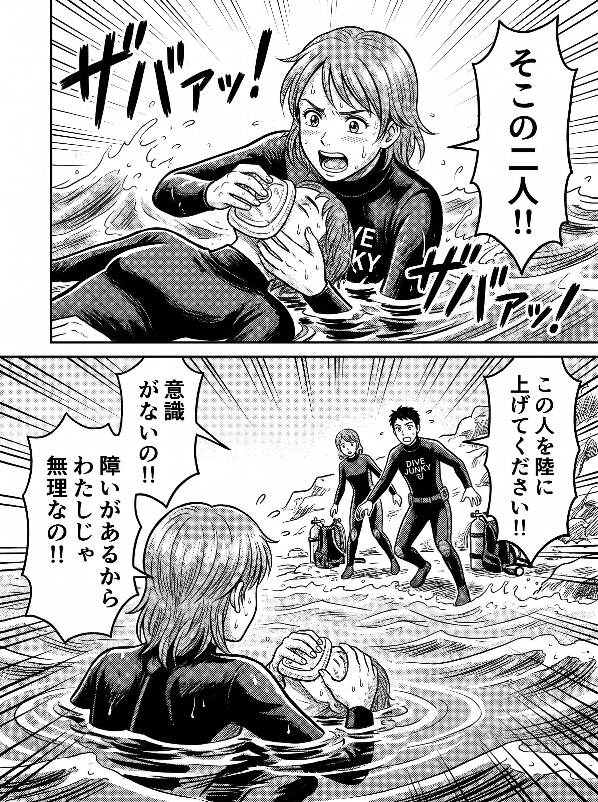

The road Orz passed by 2026 年 11 月
11 月 05 日 ( 木 )
Dive #244 ぼくにとってのレスキュースキル
レスキュー。

今のぼくは最後の陸上に要救助者を引き揚げるところができない。体幹機能障害と協調運動障害があるからだ。
つまりレスキューのプロセスを完遂できない。
そんな人間がダイビングをしていいのか？と実はずっと自問自答している。
ぼくはレスキューのプロセスが最低でもできない人間はダイバーとしてダメだろう、バディになにか起きたときに無力ではだめだろう、と Open Water の頃から自分自身に対してずっと思ってきたから。
だからぼくは今のぼくをダイバーと認めることはできないな。
そう思ってしまう。
でもやっぱり元には戻れないから、今のぼく自身を許すことが必要なんだろう。そしてたぶんそれにはもうちょっと時間が必要だと思う。
追記 2026/11/07 (Sat) 16:50:51 (JST)
どうもぼくが書く文章というのは情報が足りないのかなんなのか、自分のことを言われていると間違える人が続出する傾向がある。あるいはぼく自身が苦しんでいることを投稿して、それを読んだ人の中には自分自身の苦しんでいることが湧き上がってきてしまって、語らずにはおれなくなるのかもしれない。
実際に threads で自分は体力が無くてレスキューに困難を感じているがダイバーとして失格なのかという確認のレスポンスがあった。
基本的にぼくはぼく以外の人にダイバー失格であるとかダイバーである資格など無い、なんてことは言わない。そんなことも思ってもいないので、以下にその女性との会話を threads から引用する。これはぼく自身に対する呪いなのだということが理解いただければ幸いである。
orzbruford:
【ぼくの話】
レスキュー。
今のぼくは最後の陸上に要救助者を引き揚げるところができない。体幹機能障害と協調運動障害があるからだ。
つまりレスキューのプロセスを完遂できない。
そんな人間がダイビングをしていいのか？と実はずっと自問自答している。
ぼくは、レスキューのプロセスが最低でもできない人間はダイバーとしてダメだろう、バディになにか起きたときに無力ではだめだろう、と Open Water の頃から自分自身に対してずっと思ってきたから。
だからぼくは今のぼくをダイバーと認めることはできないな。
そう思ってしまう。
でもやっぱり元には戻れないから、今のぼく自身を許すことが必要なんだろうし、たぶんそれにはもうちょっと時間が必要だと思う。
私も筋力が足りないので自分よりも大きなダイバーの救助は難しいといつも思うのですが、
極端な話マツコデラックス氏が潜水する場合、マツコ氏のバディはマツコ氏を救助できるダイバーでないとなってはいけないという認識で合っているでしょうか？
orzbruford:
レスを空リプの形で置いておきます。よろしければ見ていただけると幸いです。
正直その内容の質問をなぜ受けるのだろうと戸惑っています。ぼく自身の話をしているだけなのですが。
ここではぼくが Open Water 1 の頃から、ぼく自身に強いてきて、そのために今苦しんでいることの話をしています。
この過剰としか思えない考えを他の方に向けたことはありません。今でも向けません。今後も向けることはないでしょう。
これまで他の方にそうあれと一度も思ったことはありませんし、思ったことがないのですから言ったこともありません。当然そんな指導をしたこともありません。
ぼくが 1990 年に受けたレスキュートレーニングをきっかけに、ぼく自身に強いてきたことを書いただけです。
そのあたりのことを最近まんがという形式でまとめました。主人公が女の子っていう体をとっていますが、主人公はぼく自身で、登場する指導者はぼくの中でもうちょっと現実的になれとぼくに言う、もう一人のぼくです。
この考えを自分自身に対してもやめたいのですが、うまくいってません。
お返事どうもありがとうございます。私は筋力が足りないのがコンプレックスになっています。それからCカードを取ってから自分よりも体重が軽い人とバディを組んだことがありません。NAUIレスキューダイバーは取りましたが、自分よりも大きいダイバーを岸に上げるのはまだしも、機材を全部つけたままのバディを一人でボートに上げるなんてできるかどうかわからない。レスキューはまず自分が死なないためのセルフレスキューができればいいんだと自分で理解していましたが、Threadsを始めてからそれではいけない、バディの命を預かる覚悟がなければダイビングをしてはいけないんだろうか？と認識が揺らいでいるのが現在地です。
orzbruford:
ちょっと長くなりますがご容赦ください。
ぼくはレスキューはセルフレスキューとメジャーレスキューが必要にならないためにどうするのかを考えるようになるために受けるものだと思っています。
ですから
> レスキューはまず自分が死なないためのセルフレスキューができればいいんだと自分で理解していました
ぼくもそう思っています。
> Threadsを始めてからそれではいけない、バディの命を預かる覚悟がなければダイビングをしてはいけないんだろうか？と認識が揺らいでいるのが現在地です
もしぼくのポストでそうなっているのでしたら申し訳なく思います。あれは本当にぼくがぼくに強いていることなので。
もしぼくが他のダイバーに、バディの命を預かる覚悟がないのならダイバーの資格がないんだろうか、って相談を受けたら、そんなことはないです、と一笑に付します。
だってそんなはずはないですし、そんなことを言い出したらダイビングをしていい人なんていなくなってしまいます。
バディに対してバディとして責任をぼくは感じますけれど、背負うとなるとちょっと違うんじゃないかと思います。
やはりお互いにそれぞれ独立した人間ですし、そうである以上、自分の安全に関してはやはり一番責任があるのは自分自身であってバディはありません。
ぼくはダイバーの安全に対する助長性としてバディシステムを重視しています。よく他人には馬鹿にされていますけれど。
なおぼくのバディ観やバディシステムを重視する姿勢がどうやって育まれていったのかの一部はここに書いています。
ぼくの他の人とは異なるバディ観、バディシステム観、ダイバー観は教科書からくるものもありますけれど、根幹を作ったのはやはり自分のダイバーとしての体験になります。
ぼくにとっては紙の上の話ではなくなってしまったので、なかなか自分の考え方を修正するのは難しいのですね。
それで障害者になってしまって、それまで普通にできていたことができなくなってしまって、苦しんでいるのが現在のぼくの姿ということになります。
最初に反応を頂いた投稿も、ぼくを縛り付けている呪縛のようなものを書いたに過ぎません。あれがダイバーの定義であるとは実は露ほども考えていないのです。
それでバディとレスキューの話に戻しますけれど、ぼくのバディやバディシステム、レスキューに対する発言の根源は実は非常にシンプルです。
- バディに死なれたくない
- 悲しむバディの家族の姿を見たくない
- 自分も死にたくはない
- グループの仲間全員に対してもそう
- アシスタントインストラクターになってからはお客さんに対してもそう
- だから可能なやれることをやる
ただこれだけのことなのですね。
問題はこれが今のぼくに対して呪縛のようなものになっている、っていうことなんです。
レスキューを完遂できないぼくがダイバーを名乗って良いのか、っていう気持ちが頭の中からどうしても消えない。
ダイバーと名乗って良いんですけど、それが消えない。
だから今のぼくにとっては「呪い」のようなものなんです。
肩の力を抜け、とはよく言われます。
力の抜き方がわからんのですね。
人にはもっと楽にしていいですよ、なんて言ってるのに、本人がどうやって肩の力を抜いたら良いのかわからない。それでもなぜかサポートが成立する。不思議なものです。
そうそう。
フルスクーバ装備を身につけたダイバーの揚陸はどんな怪力の持ち主でも無理です。安心してください。曳航中に全機材を脱装していくのはそのためです。
- Category :
- #Records of Orz's Road
- #ダイビング
- #スクーバダイビング
- #レスキュー
- #バディ
- #バディシステム
- #呪い
- #円月島1990